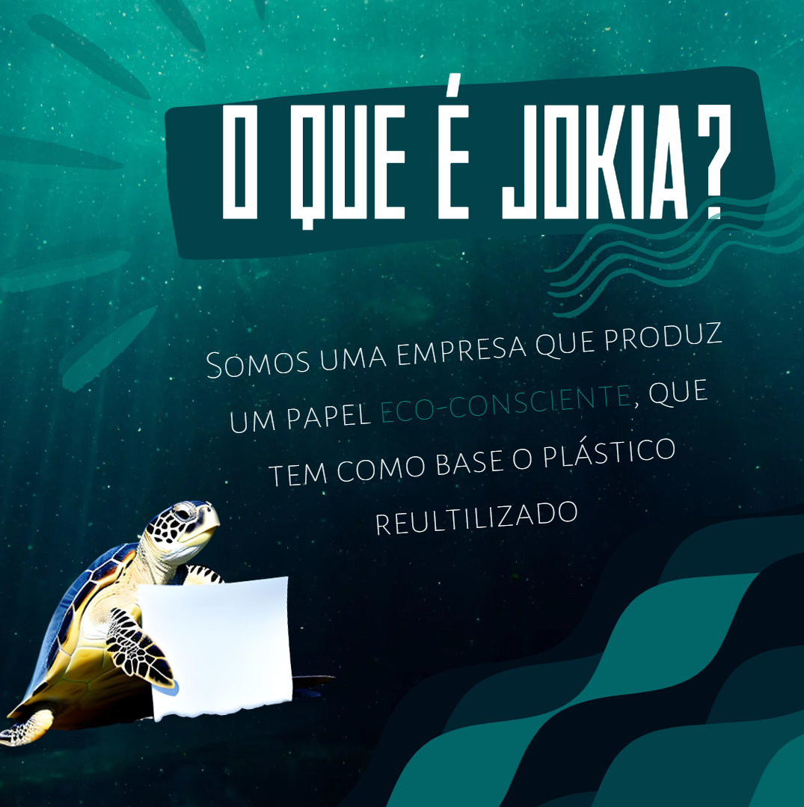
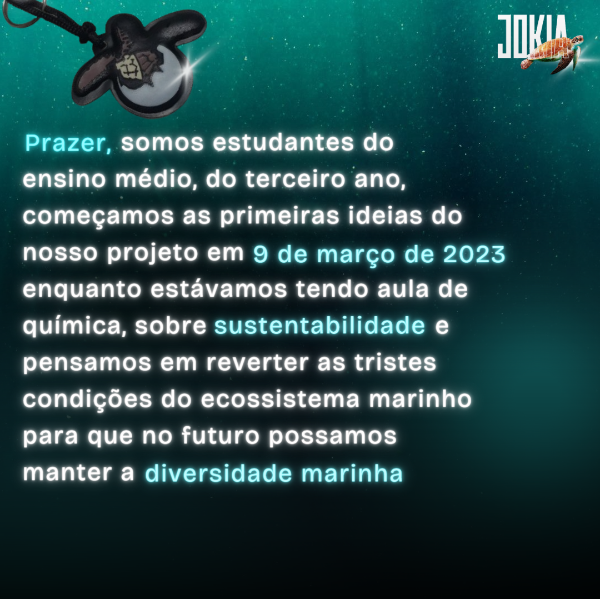

Esse é o Jokia!
Somos uma empresa que visa a sustentabilidade e a preservação do meio marinho. Tranformando o plástico inultilizado em papel.
Atualmente somos um grupo pequeno, mas possuímos apoio de diversas pessoas, com estudos, materiais, e acolhimento
Você sabia que:
70% dos brasileiros não separam lixo comum do reciclável, mas 77% da população sabe que boa parte dos plásticos é reciclavel.
Reciclagem é o reaproveitamento de materiais. Mas o termo reciclar é usado apenas para coisas que podem voltar ao seu estado original.
Processo possível a poucos materiais. O processo de transformar uma coisa em outra diferente da que lhe originou é chamado de reutilização ou reaproveitamento.
Diminui:
- Desperdício de energia e água;
- Contaminação do solo;
- Contaminação dos lençóis freáticos;
- Protege recursos.